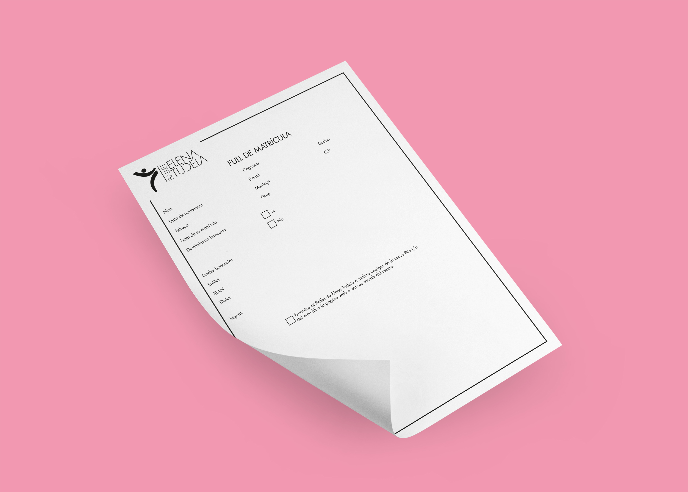
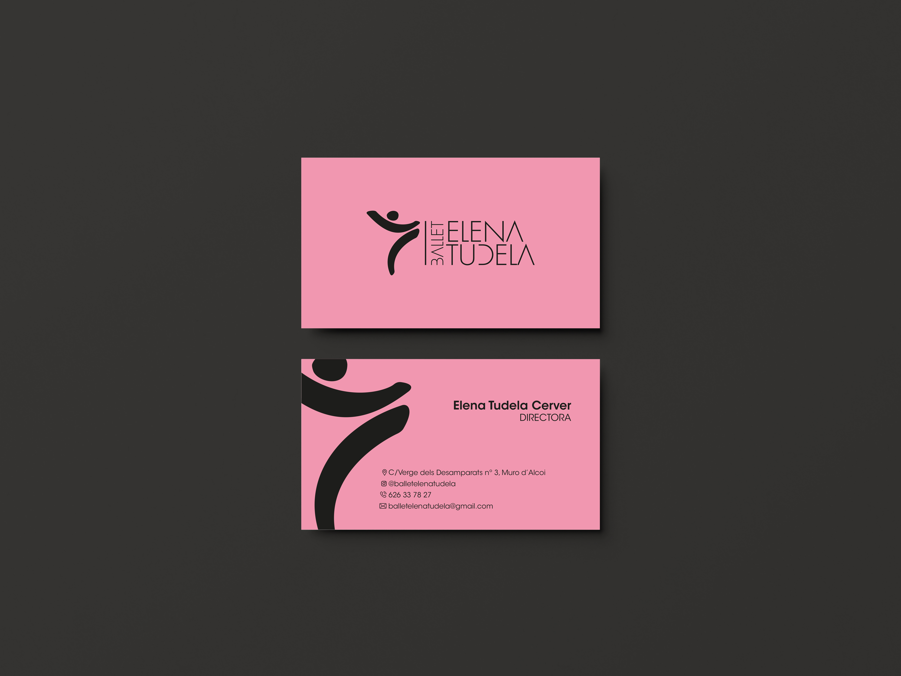
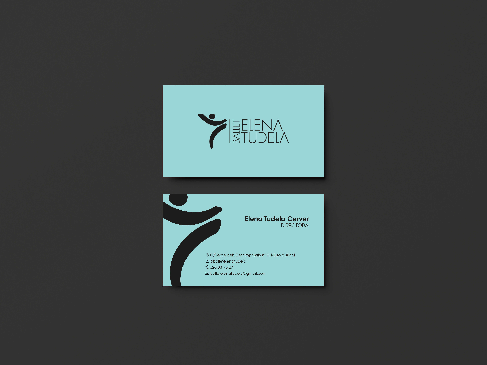
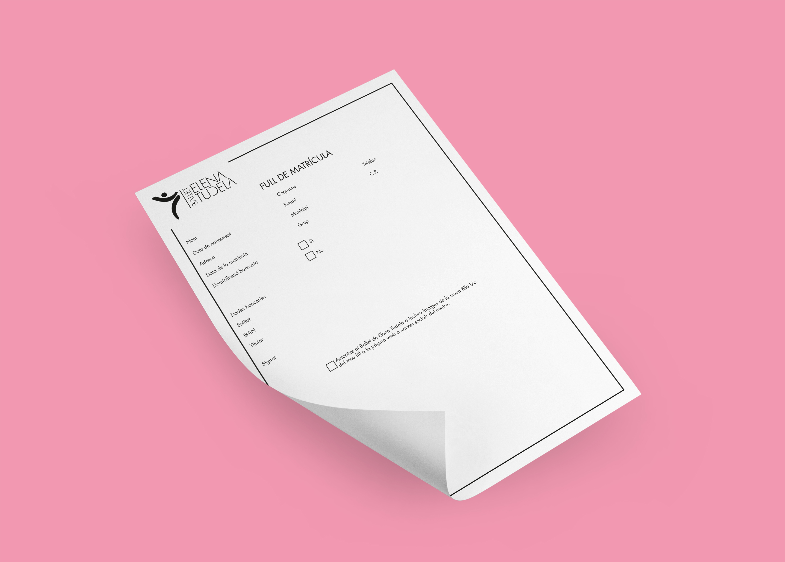
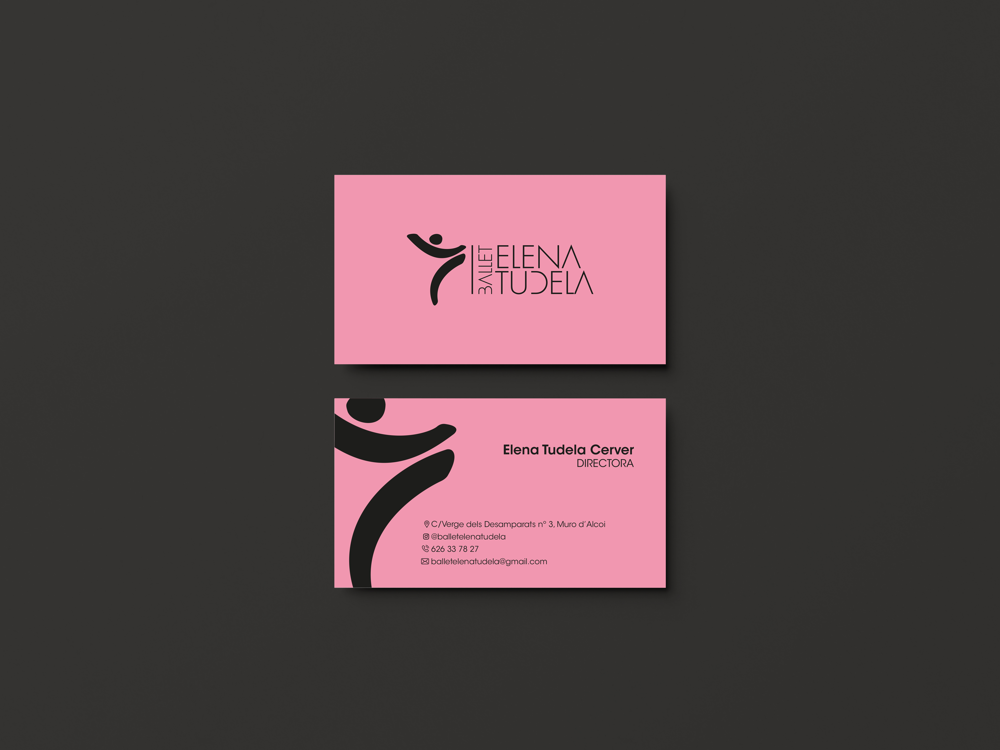
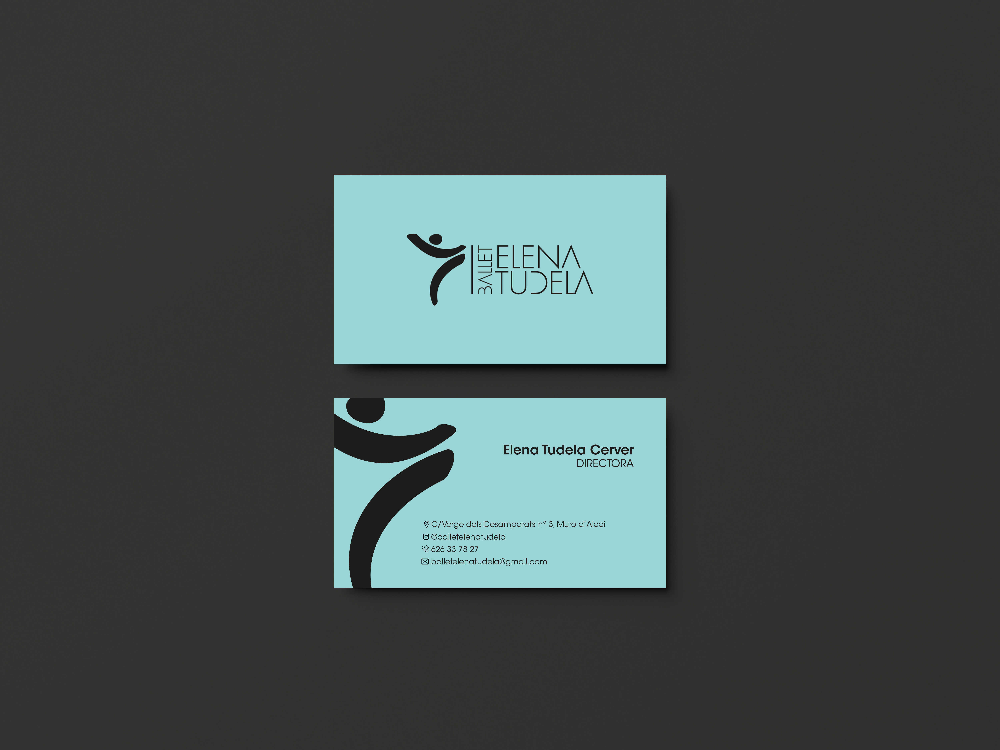

Elena Tudela
 





Este proyecto consistió en la realización de la nueva imagen gráfica de la academia de baile de Elena Tudela, debido a su 25 aniversario y a que inauguraba un nuevo local. Esta quería mantener el isotipo anterior, así que mi trabajo consistió en realizar el nuevo "namig" ya que el antiguo era demasiado largo y nadie conocía la academia por ese nombre, lo conocían por "Elena Tudela" así que tanto la academia como yo tomamos la decisión de cambiarle el nombre a "Ballet Elena Tudela", el nuevo logotipo y toda la papelería que iba a usar la academia. La academia pretendía distinguirse del resto de su competencia transmitiendo una gran profesionalidad, elegancia, moderno y dinámico. Considero que en este trabajo se cumplió el objetivo ya que la tipografía escogida le da este carácter de modernidad y elegancia al mismo tiempo, el isologo que quisieron mantener da ese dinamismo que querían transmitir debido a las formas que tiene y finalmente considero que la composición del logotipo nos transmite esa profesionalidad y también elegancia por las proporciones escogidas y la distribución de elementos.